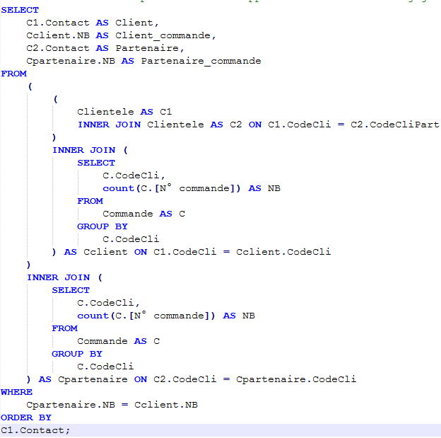
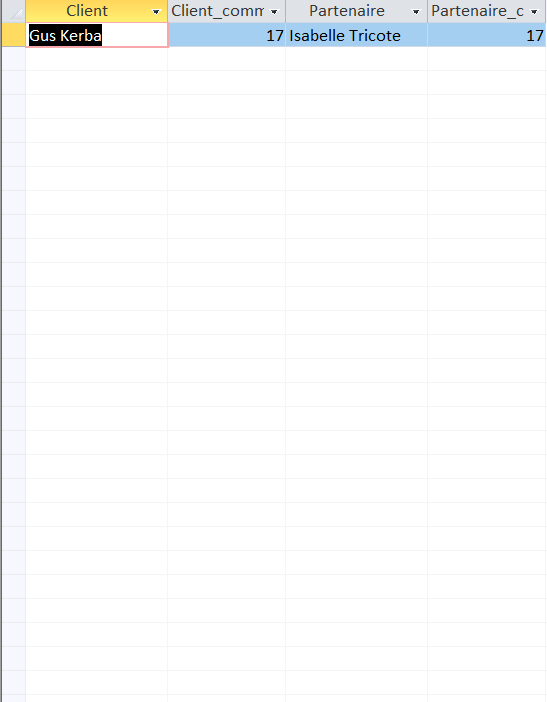

Dans une réflexion sur le partenariat client : A-t-on des clients pilotes d’un réseau partenaire ayant autant de commandes que les clients partenaires ?


L'intéret de cette requête est de voir s'il y a des partenaires client qui commande autants qui des clients pilotes est le fait de s'il faudrait insister que les clients ameners leurs partaines à commander chez Kdou.
La requête compare le nombre de commandes de chaque pilote à celui de chacun de ses partenaires. Seuls les clients ayant au moins une commande sont conservés, car sans commande le partenariat ne rapporte rien. Elle sert à juger si le partenariat est bénéfique.